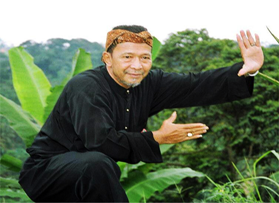

Bapak Mohamed Rifai Sahib

Bapak Mohamed Rifai Sahib, or, as he preferred to be known, Pak Rifai, was a man of tremendous energy. One of the most senior masters at IPSI, the Indonesian Pencak Silat Federation, he was a performer, a choreographer, a teacher and an ambassador for Silat.
Born in Jakarta, Pak Rifai studied Cimande silat in addition to a number of Betawi styles, mastering them all. An excellent performer, Pak Rifai worked extensively to promote and develop the artistic aspect of Pencak Silat. He was an important member of the committee which developed the Jurus Tunggal and Jurus Regu, which are now two of the benchmark performance pieces for international competition. Pak Rifai worked to choreograph these pieces, adding a significant West Javanese component to the movements. He also worked tirelessly to improve their scoring and standardise their teaching internationally, working with the national federations of a number of countries, including the UK, training a number of European Seni champions. In addition to this, Pak Rifai traveled extensively and taught Silat across Europe and the Middle East to promote the art.
As the Grandmaster of Silat Karuhun, developed to help preserve the traditional styles from West Java, Pak Rifai taught extensively and promoted his school internationally, most notably in Singapore, which hosts a sizable school of Silat Karuhun.
Pak Rifai was an important contributor to the development of modern Silat, particularly the artistic aspect. He dedicated his life to Silat, in a manner that few are able to, and will be greatly missed by those who knew him.
Bapak Mohamed Rifai Sahib, who had been ill for some time, passed away on 19th August. He leaves behind 5 daughters and 2 sons, and 13 grandchildren.